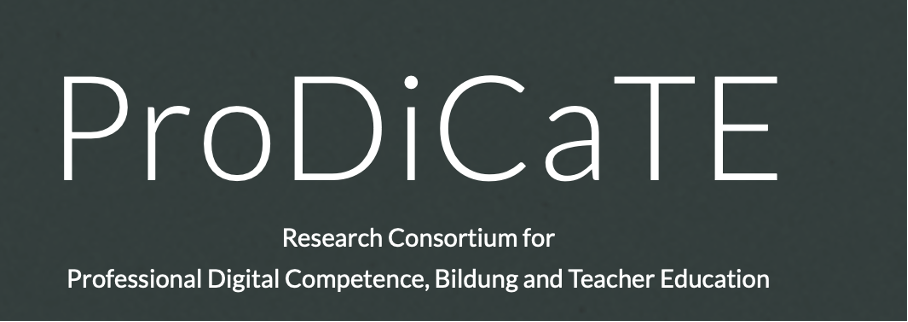
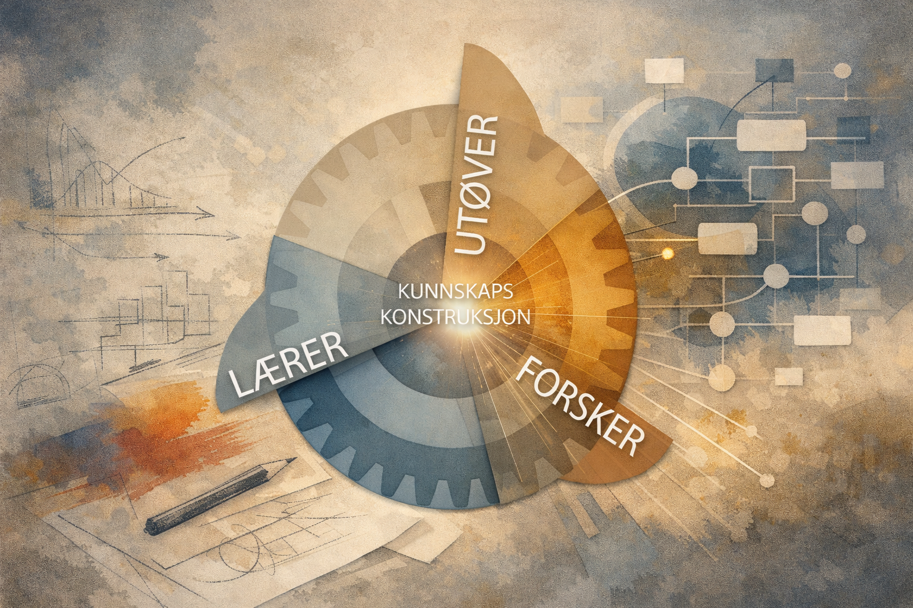
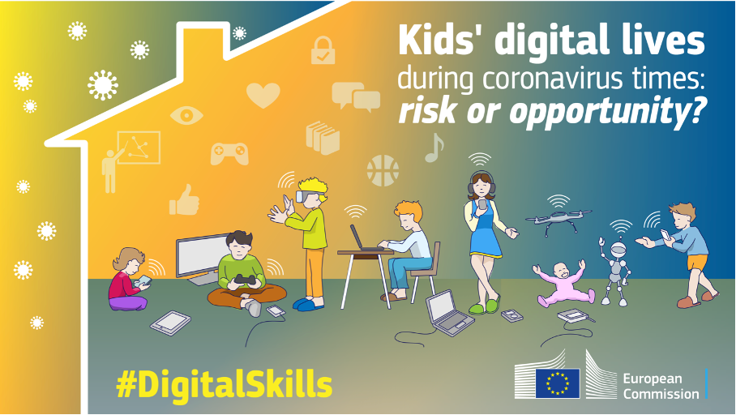

Pågående prosjekter
Å lære med maskiner
Forskningslinje om kunstig intelligens i elevers læringsprosesser, undervisningsdesign og vurderingspraksiser. Tilknyttet AI-Learn.

LeadDig
Leadership and learning for the development of teachers' professional digital competence. Pågående prosjekt der jeg deltar.
DigSkoleForsk
Følgeforskningsprosjekt på DigSkole med fokus på PfDK, elevers læringsstrategier og sammenheng mellom formelle og uformelle læringssituasjoner.

Prodicate, et konsortium!
Samarbeid om forskningsnære utviklingsprosesser og kunnskapsbasert innovasjon.
Ferdigstilte prosjekter

Mellom frihet og styring
Studie av kreativ problemløsning i pedagogisk kontekst. Ferdigstilt i 2001.

Mellom virtualitet og virkelighet
Digital fortelling i førskolelærerutdanningen. Ferdigstilt i 2014.

Fortell det med farger
Multidisiplinært arbeid med visuelle uttrykk og læringsprosesser. Ferdigstilt i 2017. Kvalitetssikret.

Visualisering som drivkraft i forskning
Om visualisering, meningsskaping og forskningsarbeid. Ferdigstilt i 2017.

Diskursanalyse av kulturskolens rammeplan
Analyser av styringsdokumenter og faglige diskurser. Ferdigstilt i 2020. Kvalitetssikret.

PhD-prosjekt: Digital danning i barnehagen
Prosjektstruktur, delstudier og dokumentasjon fra doktorgradsarbeidet. Ferdigstilt i 2014.
Bilde skaper tekst, tekst skaper bilde
Samspill mellom visuelle og verbale uttrykksformer i læringsarbeid. Ferdigstilt i 2009. Kvalitetssikret.

KIDICOTI
Internasjonalt forskningsprosjekt om barns digitale hverdagsliv. Ferdigstilt. Jeg var leder for den norske delen.
NOTELEB
Internasjonalt prosjekt om lek, teknologi og danning. Ferdigstilt. Jeg var leder for NTNU sin del av prosjektet.